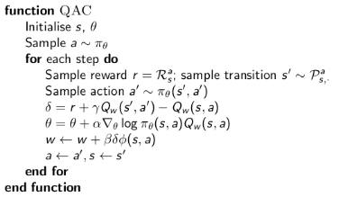

策略梯度算法
上一章中介绍了值函数的近似，这是一种通过获得v或者q函数从而得到策略的方式。但是对于选择最优策略这个问题来说，更自然的方式是直接求解策略。
这一节实际上对应了免模型控制那一部分，只不过我们这部分介绍用神经网络的方式对函数进行近似，从而求解。而免模型控制则不从神经网络的方式来求解问题，它一般采用适用于离散情况的价值函数，并采用greedy的方式求解最优策略。这一节则是用神经网络的方式对策略函数进行估计。
上节课我们参数化了价值函数：
V(s,w)Q(s,a,w)≈V(s)≈Q(s,a,w)
这节课我们参数化策略函数：
π(s,a,θ)=P[a∣s,θ]
这节课仍然关注于model free 强化学习。
Introduction
基于策略的方法优点：
- 更好的收敛性质：因为策略每一次都在提升，而基于价值的方法有一些在后期在发生震荡
- 在高维度或者连续空间中高效：在连续空间中比较得到最好的价值函数很难
- 可以学习随机策略：比如在石头剪子布的游戏中，均匀分布，也就是随机策略就是最优策略。但是价值函数总要找到一个最优的策略，因此无法找到最优策略。尽管MDP的环境下总会有最优策略，但是在这种情况下，它是不完全符合MDP的。
- 有时候计算价值函数很复杂，但是学习策略就很简单。
基于策略的方法缺点：
- 通常收敛于局部最优而不是全局最优
- 策略的评估低效且有高方差
策略目标函数
我们的目标是给定一个有参数θ的策略πθ(s,a), 我们想要找到最优的θ
因此我们需要定义损失函数来描述策略的好坏，根据不同类型的环境，我们分情况讨论目标函数：
-
在能够产生完整episode的环境中，用初始状态价值来表示目标函数：因为它的完整含义就是，从初始状态开始，如果采用这个策略，那么最终的完整的return是多少
J1(θ)=Vπθ(s1)=Eπθ[v1]
-
在连续无终止的环境下，用平均状态价值来表示目标函数：
JavV(θ)=s∑dπθ(s)Vπθ(s)
其中dπtheta(s) 是当前策略下，MDP关于状态的分布
-
连续无终止的环境下，也可以用每个时间步的平均回报来表示：
JavR(θ)=s∑dπθ(s)a∑πθ(s,a)Rsa
也就是用这个状态下所有可能的action的reward做加权平均作为这个状态的价值。但是这种方式在这个状态下只考虑一步的reward。
基于策略的优化方法主要目的就是最大化目标函数。尽管有许多的方法，但是在课程里只会介绍gradient descent和一些利用序列结构的方法。
有限差分策略梯度
目标函数J(θ)，则△θ=α▽θJ(θ)
有限差分法计算策略梯度
当梯度函数很难得到的时候，对于参数θ的每一个分量θk 有：
∂θk∂J(θ)≈ϵJ(θ+ϵuk)−J(θ)
其中uk 为第k维是1的one-hot向量。
有限差分法简单，不要求函数可微分但是有噪声不高效。
蒙特卡罗策略梯度
在这种方法下我们要假设策略函数是可微分的。
▽θπθ(s,a)=πθ(s,a)πθ(s,a)▽θπθ(s,a)=πθ(s,a)▽θlogπθ(s,a)
定义score function：
▽θlogπθ(s,a)
Score function 是一种指导我们采取策略的函数，它表示这个action在这个状态s下有多优秀。为了更具体的介绍scroe function，这里会举 softmax策略和高斯策略两个例子。
softmax 策略
由于采用了softmax 策略，因此最简单的形式下：
πθ(s,a)∝eϕ(s,a)Tθ
加入正则化就是标准的softmax形式。因此score function：
\triangledown_{\theta} \log \pi_{\theta}(s, a) = \phi(s, a) - E_{\pi_{\theta}}[\phi(s, \dotproduct)]
这个形式可以看成是，实际采取的action的特征函数相比这个状态下的平均特征函数高多少。这就是这个action的实际得分。
高斯策略
这里让均值是参数化的：μ(s)=ϕ(s)Tθ
方差在这里是固定的σ2，但是它可以是参数化的。
策略服从a∼N(μ(s),σ2)
▽θlogπθ(s,a)=σ2(a−μ(s))ϕ(s)
策略梯度定理（Policy Gradient Theorem）
One-Step MDPs
首先我们先考虑单步MDP问题：
- 从一个状态s∼d(s)开始
- 一步之后获得reward r=Rs,a，结束
由于是单步过程，因此3种形式的目标函数是一样的：
J(θ)=Eπθ[r]=s∈S∑d(s)a∈A∑πθ(s,a)Rs,a
目标函数的梯度：
▽θJ(θ)=s∈S∑d(s)a∈A∑πθ(s,a)▽θlogπθ(s,a)Rs,a=Eπθ[▽θlogπθ(s,a)r]
n-Step MDPs
我们可以将one-step MDPs拓展成n步。我们只需要把即时奖励替换成Q函数值。且如下公式适合于前面介绍的3种目标函数J=J1,JavR,1−γ1JavV，它们的梯度都是：
▽θJ(θ)=Eπθ[▽θlogπθ(s,a)Qπθ(s,a)]
这里我们可以区分监督学习和强化学习：
监督学习中状态和行为的好坏应该由监督信息给出。但是强化学习中会通过价值函数给出。
蒙特卡罗策略梯度
蒙特卡罗策略梯度采用随机梯度上升的方式更新参数。它使用策略梯度的方式。使用return vt 作为Qπθ(st,at)的无偏差采样：
蒙特卡罗的方法就是要采样来估计，因此用v作为Q的采样，之所以不用G来表示采样是因为G存在较大的噪声。
Actor-Critic 策略迭代
前面介绍的蒙特卡罗策略迭代有较高的方差。因此提出Actor-Critic的方法，简单说就是增加一个Critic取评估action-value function。这样：
- Critic： 更新action-value function的参数w
- Actor：更新策略参数θ 它的迭代方向是由Critic的action-value function给出的。比如Q给出了负数值，则策略会让这个情况的概率降低。反之，则会上升。
具体的：
▽J(θ)△θ≈Eπθ[▽θlogπθ(s,a)Qw(s,a)]=α▽θlogπθ(s,a)Qw(s,a)
Critic 做的事情就是上一节做的事情：得到可以计算值函数的近似值的函数(蒙特卡罗，TD(0), TD(λ))。而前面的蒙特卡罗策略迭代的V是实际计算出来的而非估计得到的。
action-value actor critic
这里介绍一个具体的Actor-Critic 策略迭代算法。这个方法中Critic采用TD(0)对Q函数进行更新，且Q函数采用了线性函数来近似：Qw(s,a)=ϕ(s,a)Tw

和GAN有类似之处，但是两者没有对抗。
α 可以理解为是描述贪婪程度的量，当它无限大的时候，可以看作是一种greedy的方式进行更新，也就是让其他情况的频率趋近于0，而当前最优情况频率趋近于1
利用baseline减小方差 – Advantage Function Critic
因为我们是通过采样的方式得到每个trail，对于某一个状态来说，如果reward都是正的，那么所有的价值函数都是正的，也就是只要这个状态的任何一个action只要被采样，它的概率就会提升。在一个被充分采样的环境下，这不是一个问题，因为有的action提升的多，有的提升少，归一化后能够有正常的表现。但是我们无法保证采样充分，那么如果一个action可以带来很高的reward，但是出现频率低，没有被采样到，而其他被采样的action的频率都增加，导致这个action的频率下降，不符合我们的预期。因此我们需要得到有负数值的价值函数。因此我们可以通过对价值函数减去一个baseline函数来达到这个目的。
也就是用如下函数(Advantage Function)替代原本的Q函数：
Aπθ(s,a)=Qπθ(s,a)−B(s)
即：
▽J(θ)=Eπθ[▽θlogπθ(s,a)Aπθ(s,a)]
可以证明，只要B和a无关就可以保证这个增加的baseline不会对最终值有改变，也就是：
Eπθ[▽θlogπθ(s,a)B(s,a)]=0
这个B的很好的选择就是V函数，因此更新为：
Aπθ(s,a)▽J(θ)=Qπθ(s,a)−Vπθ(s)=Eπθ[▽θlogπθ(s,a)Aπθ(s,a)]
这样，我们就需要两个Critic对Q函数和V函数分别做估计。但是在实际操作中我们不需要这么做，因为：
δπθ=r+γVπθ(s′)−Vπθ(s)
因此：
E[δπθ∣s,a]=Eπθ[r+γVπθ(s′)∣s,a]−Vπθ(s)=Qπθ(s,a)−Vπθ(s)=Aπθ(s,a)
这样策略梯度可以更新为：
▽θJ(θ)=Eπθ[▽θlogπθ(s,a)δπθ]
这样我们只需要估计V函数就可以了。
Critic 使用不同 Time-Scale
从上一章的值函数近似我们知道：
△θ=α(vt−Vθ(s))ϕ(s)
MC
△θ=α(vt−Vθ(s))ϕ(s)
TD(0)
△θ=α(r+γV(s′)−Vθ(s))ϕ(s)
TD(γ)
△θ=α(vtλ−Vθ(s))ϕ(s)
TD(λ)反向
δtet△θ=rt+1+γV(st+1)−V(st)=γλet−1+ϕ(st)=αδtet
Actors 中使用不同 Time-Scale
策略梯度可以表示为：
▽J(θ)△θ=Eπθ[▽θlogπθ(s,a)Aπθ(s,a)]=α▽θlogπθ(s,a)Aπθ(s,a)
具体的：
MC 到一个episode结束：
△θ=α(vt−V(st))▽θlogπθ(s,a)
TD(0)
△θ=α(r+γV(st+1)−V(st))▽θlogπθ(s,a)
TD(λ)
△θ=α(vtλ−V(st))▽θlogπθ(s,a)
TD(λ)反向
δtet+1△θ=rt+1+γVv(st+1)−Vv(st)=λet+▽θlogπθ(s,a)=αδet